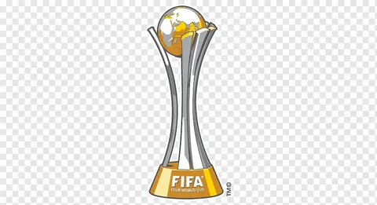

European cup

1955-56 1956-57 1957-58 1958-59 1959-60 1965-66 1997-98 1999-00
2001-02 2013-14 2015-16 2016-17 2017-18 2021-22 Real Madrid's 14
European Cup victories symbolize an unparalleled legacy in
football. Since winning the inaugural title in 1956, the club
has consistently displayed skill, determination, and tactical
brilliance. From legends like Alfredo Di Stefano to modern stars
like Cristiano Ronaldo, Real Madrid's success is marked by a
relentless pursuit of excellence. With 14 triumphs, the club
stands at the pinnacle of European football, leaving an
indelible mark on the sport's history and captivating fans
globally.
National Ligues

1931-32 1932-33 1953-54 1954-55 1956-57 1957-58 1960-61 1961-62
1962-63 1963-64 1964-65 1966-67 1967-68 1968-69 1971-72 1974-75
1975-76 1977-78 1978-79 1979-80 1985-86 1986-87 1987-88 1988-89
1989-90 1994-95 1996-97 2000-01 2002-03 2006-07 2007-08 2011-12
2016-17 2019-20 2021-22 Real Madrid's 35 La Liga triumphs
underscore the club's enduring dominance on the domestic front
in Spanish football. With a rich history of success dating back
to the league's inception, the club has consistently showcased
its footballing prowess, securing numerous league titles. From
iconic players to tactical brilliance, Real Madrid's commitment
to excellence has propelled them to the summit of Spanish
football, earning them the distinction of one of the most
successful clubs in La Liga history.
Fifa world cup

1960 1998 2002 2014 2016 2017 2018 2022 Real Madrid's 8 FIFA
Club World Cup victories represent the club's global football
supremacy. Emerging victorious in this prestigious
intercontinental competition on multiple occasions underscores
Real Madrid's ability to transcend regional boundaries and
conquer the world stage. The club's blend of top-tier talent,
strategic acumen, and a winning mentality has allowed it to
consistently assert dominance in the FIFA Club World Cup,
solidifying its reputation as a football powerhouse with a truly
global reach.
EUROPEAN SUPER CUPS

2002 2014 2016 2017 2022 Real Madrid's triumphs in the UEFA
Super Cup, clinching the title 5 times, epitomize the club's
excellence in European competitions. The UEFA Super Cup,
contested between the winners of the UEFA Champions League and
the UEFA Europa League, showcases Real Madrid's ability to
consistently perform at the highest level. With a blend of
skillful players, strategic brilliance, and a winning culture,
Real Madrid has etched its name in the history of European
football by securing victory in this prestigious competition
multiple times.
SPANISH CUPS
1904-05 1905-06 1906-07 1907-08 1916-17 1933-34 1935-36 1945-46
1946-47 1961-62 1969-70 1973-74 1974-75 1979-80 1981-82 1988-89
1992-93 2010-11 2013-14 2022-2023 Real Madrid's 20 victories in
the Copa del Rey, Spain's premier domestic cup competition,
underscore the club's enduring success on the national stage.
The Copa del Rey, with its rich history, has witnessed Real
Madrid's consistent prowess in navigating through domestic
challenges. With a combination of talent, tactical acumen, and a
winning spirit, Real Madrid has lifted the Copa del Rey trophy
on numerous occasions. This impressive record further solidifies
the club's standing as one of Spain's most dominant and
successful football institutions.